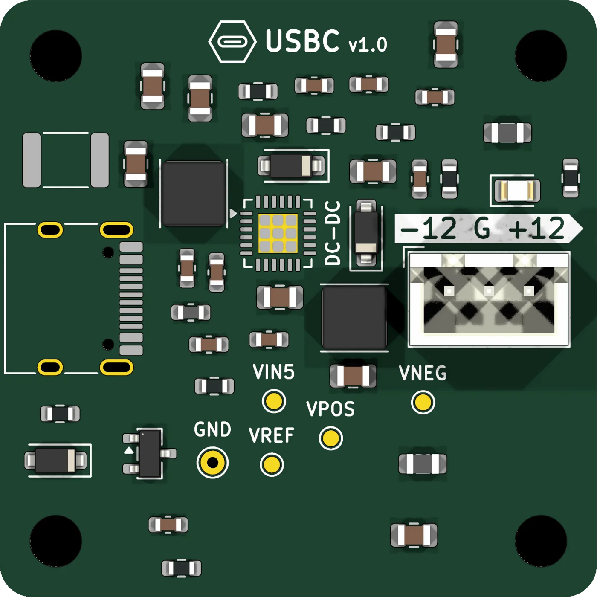
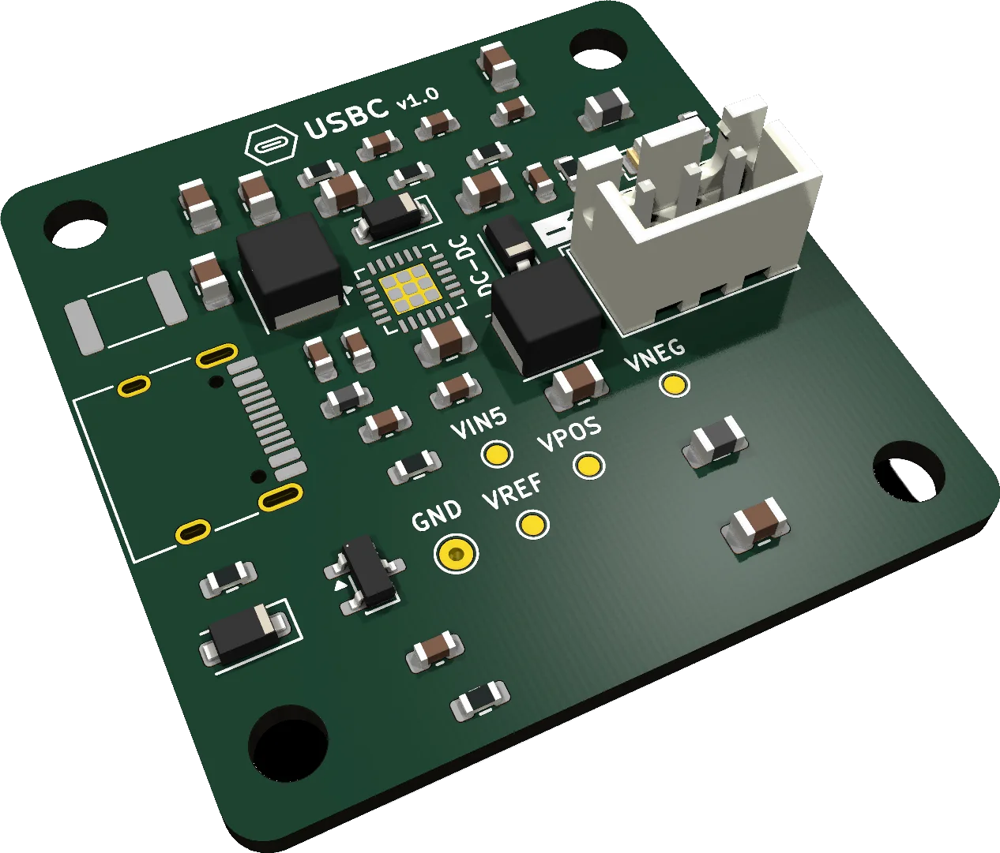
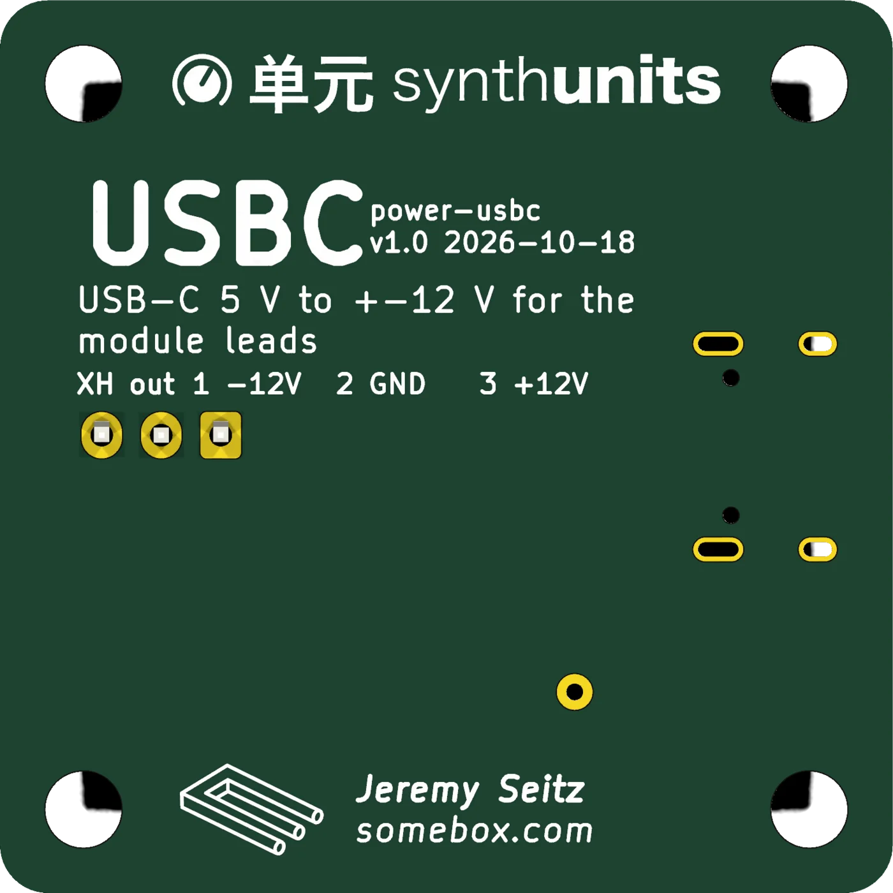
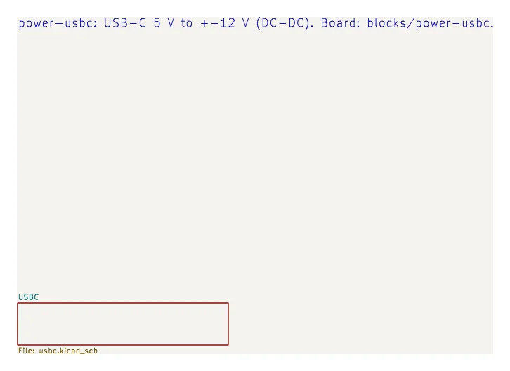
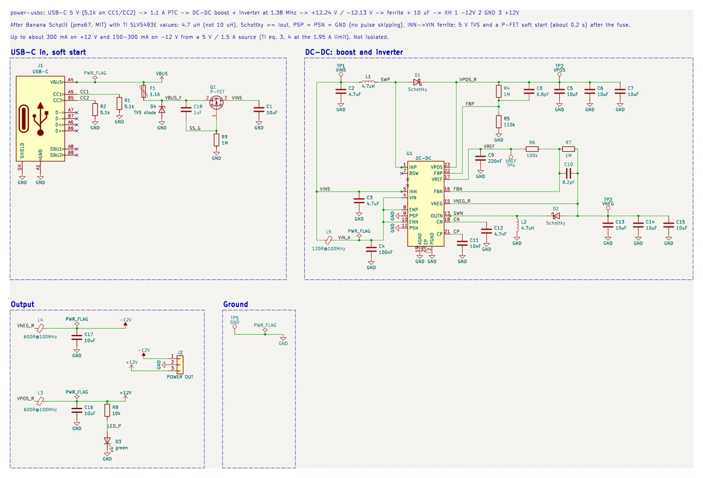

USB-C supply: ±12 V from a phone charger
Makes ±12 V from a USB-C charger's 5 V for a few modules on a desk, feeding the power hub.
A small supply that makes ±12 V from a USB-C charger's 5 V, for a few minimodules on a desk without a Eurorack case. Its 3-pin JST XH output goes to the power hub's alternative input.
A dual-output boost and inverting converter makes both rails from 5 V. It follows a published open design's split-rail stage, fed straight from USB-C, without that design's input buck converter, which isn't needed at 5 V. Where the two differ, I followed the converter's datasheet: smaller inductors, power-save mode off so it switches at a fixed 1.38 MHz with no pulse-skipping ripple in the audio band, and a ferrite and 10 µF on each rail after it.
It is only a placement mockup so far: the parts are placed, but the board isn't routed or reviewed, and it isn't in an order.
- Status
- In design: parts placed, not routed yet
- Board
- 37.5 × 37.5 mm, 2 layers



What it does
- Input: USB-C, 5 V from any USB-C charger (5.1 kΩ on both CC pins).
- Output: +12 V and −12 V on a 3-pin JST XH (1 −12 V, 2 GND, 3 +12 V); calculated set points about +12.24 V and −12.13 V.
- Designed for about 150 mA a rail continuous, set by the 1.1 A resettable input fuse; the converter itself manages about 470 and 340 mA.
- About 0.37 A from USB for six modules (an estimate).
- Fixed switching at 1.38 MHz, power-save mode off.
- A ferrite and 10 µF per rail after the converter's own capacitors.
- A 5 V TVS diode after the fuse, and a soft start: designed to reach 5 V about 0.2 s after plug-in, drawing at most about 60 mA (simulated).
- A green LED on +12 V.
- 37.5 × 37.5 mm, two layers.
Wiring and setup
- The USB-C socket is on the left edge. A phone charger is the better source.
- A straight-through 3-pin JST XH lead from its output to the power hub's alternative input; then use only that input on the hub.
Limits and open questions
- A placement mockup: not routed, not reviewed, not ordered, not built.
- The converter's layout matters more here than anywhere else in the library. It has to be checked against the maker's layout example before routing, with a solid ground plane and thermal vias under the chip.
- Not isolated: USB ground becomes the synth's ground. From a computer that also connects to your audio interface, a ground loop can hum.
- Only the soft start is simulated, not the converter itself.
- Worth trying on a laptop's port as well as on a charger.
Development notes
- The soft start came out of a review: without it, the boost's DC path charges every +12 V capacitor downstream the moment USB is plugged in, about 10.7 A for a few microseconds.
- A 9 to 12 V DC version would put a buck converter in front.
Schematic
The schematic as drawn, with each chip named by its function rather than its part number. The design isn't open source yet, so there are no files to download.




Would you use a USBC? A thumbs-up on its tracking issue is how I count interest, and you can subscribe there to follow its bring-up. Questions and ideas go to the discussions.